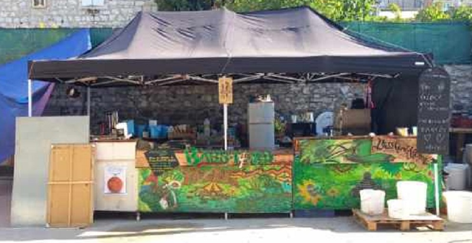
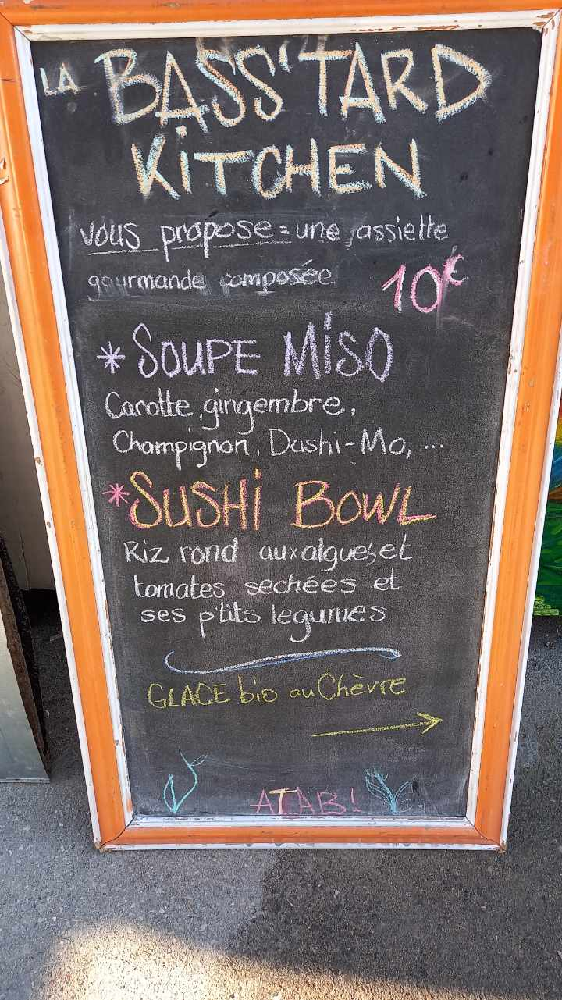
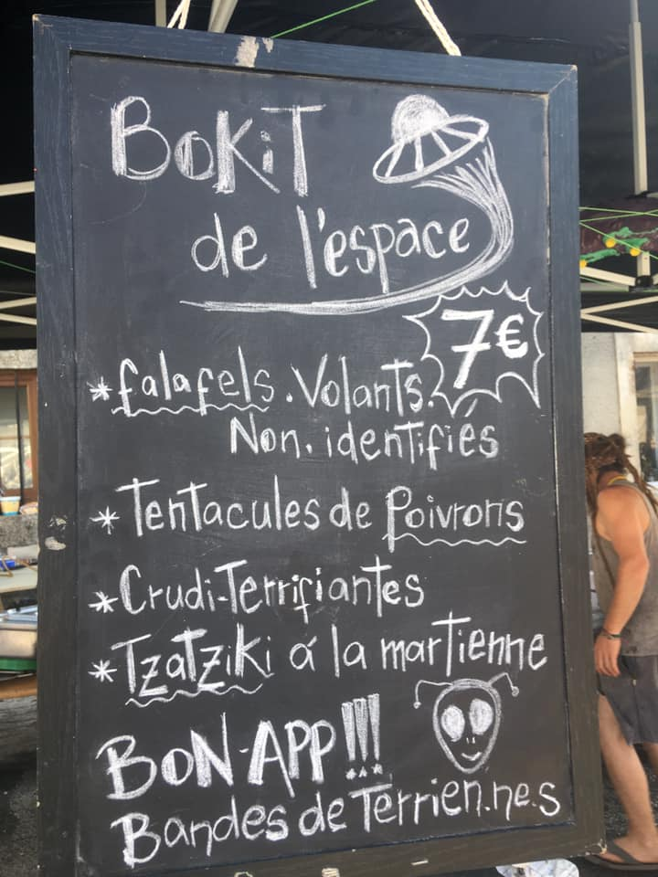
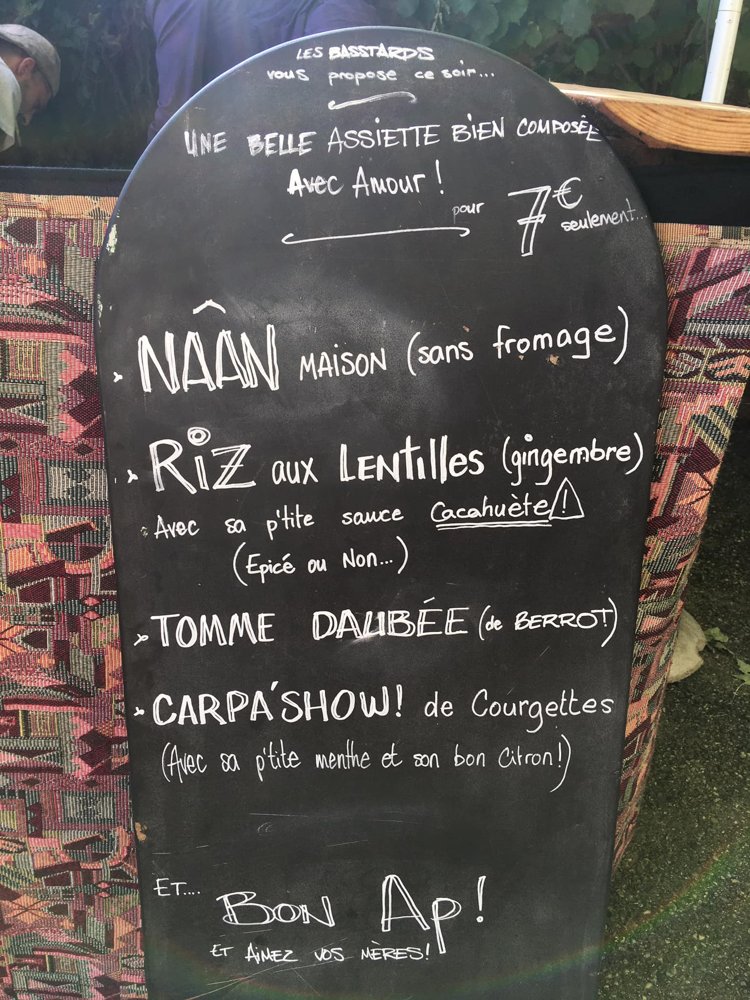
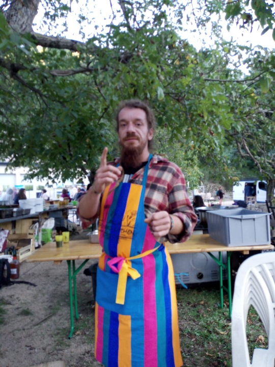
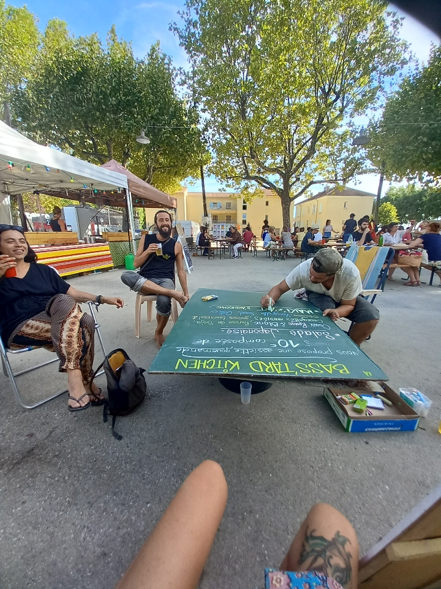
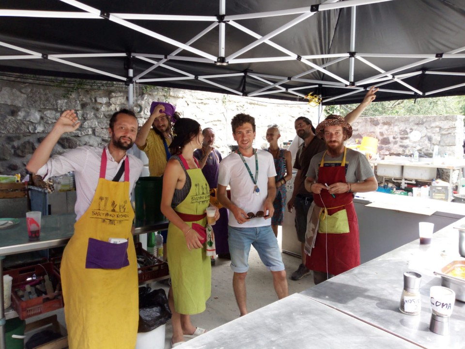
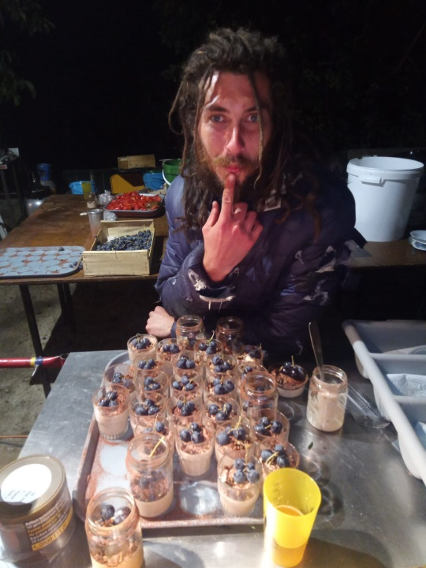
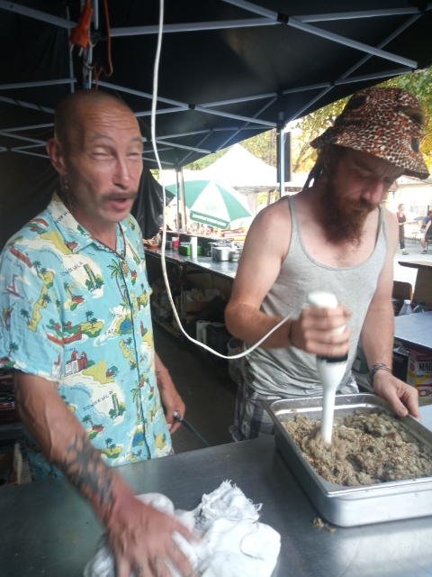
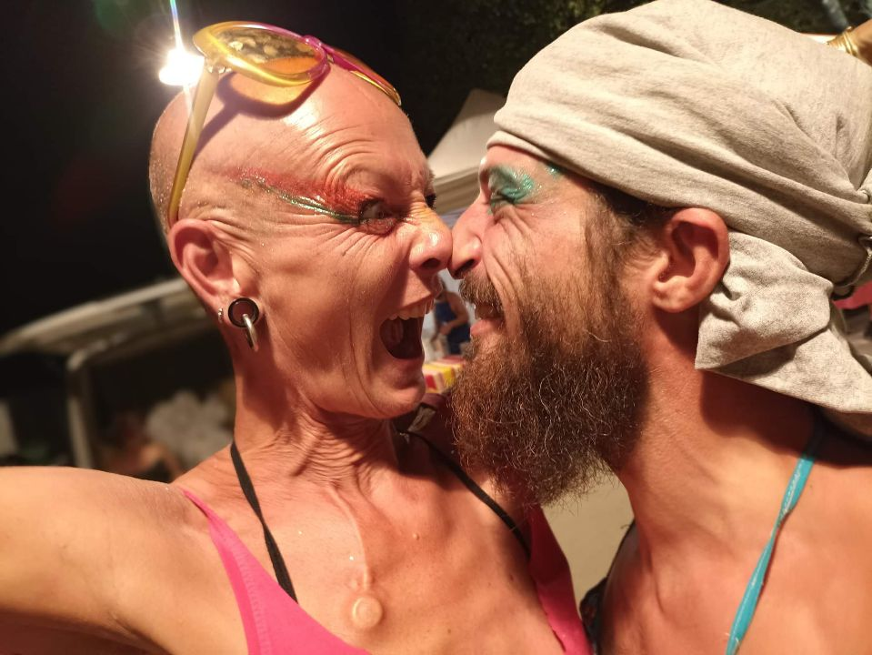

Prochaines dates :
Pour nous contacter :
et plus encore sur le facebook du Collectif Bass t'Ard :

La Basstard Kitchen c'est

et
  
et encore aussi


des créations free-style
une équipe de choc

des petits pots à la chataigne

de la technicité

de l'entente chaleureuse...

Les états généraux du film documentaire
et bien d'autres encore...